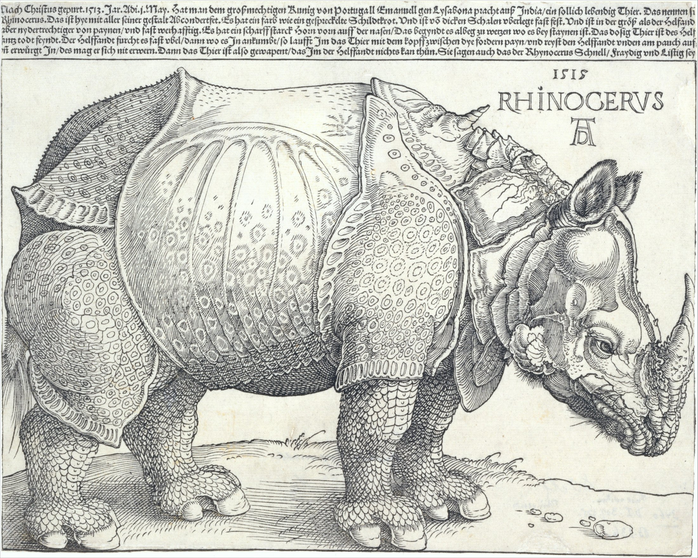

A body made heavy by thousands of lines—and by the limits of a page.
A body pressed toward the frame. A lowered head; a horn turning upward.
Warm paper meets dark ink. Spaced lines blend into apparent greys.
An open flank, a dense belly and grounded shadows give the body weight.
Exercise palette and ratios; not measured pigments or image areas.
Detail · cropped from the same image; colours unchanged
Technique: raised surfaces print; cut areas stay pale. Curves build form. Crosshatching deepens shadow.
Historical fact: the German artist never saw the animal. His image nevertheless shaped its recognition for centuries.[2]
Our reading: the small eye gives the armour life. Dense detail also reveals the seams of imagination.
Start with a silhouetteLet the subject fill about 85% of the width. Check its outline first.
Use three densitiesBlank, sparse, concentrated. Give the busiest marks one home.
Design with valueBegin with 70% paper, 20% grey, 10% ink. Adjust for reading.
#F2F0E6 / #9C9A90 / #292C2B
Exercise palette and ratios; not measured pigments or image areas.
Albrecht Dürer · 1515 · Woodcut
The Metropolitan Museum of Art · 19.73.159
Museum image: Public Domain. Artist credited above.
Text: Daily Art. Historical facts and interpretation distinguished.
[1] Collection and rights · [2] Historical context (another impression) · [3] Original image
![[3] Original image](https://images.metmuseum.org/CRDImages/dp/original/DT241450.jpg){kind=link}